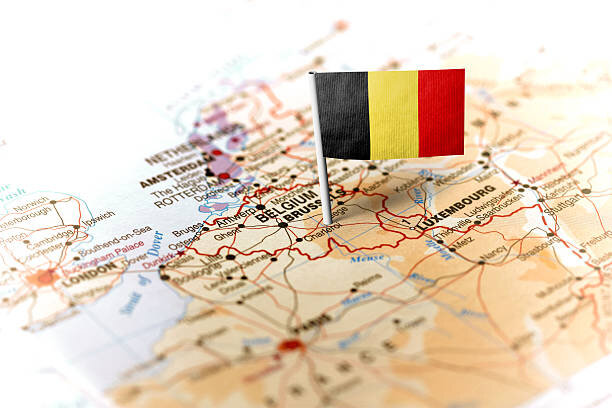

ИНТЕРЕСНЫЕ ФАКТЫ О БЕЛЬГИИ:

- Официальное название Бельгии – Королевство Бельгия.
- Бельгия несмотря на свои небольшие размеры граничит с четырьмя странами. Это Франция, Германия,
Люксембург и Нидерланды.
- Население Бельгии составляет порядка 10.5 миллионов человек
- Бельгия одна из самых густонаселенных стран в мире.
- Столица Бельгии – Брюссель также является столицей Европейского Союза.
- В Бельгии три официальных языка. Несмотря на то, что многие считают основным языком Бельгии –
французский, родной язык почти для 60% населения – голландский. Менее, чем для 40% Бельгийцев родным
языком является французский. Третий язык – немецкий, на нем говорит небольшой процента на востоке
страны.
- Почти все бельгийцы живут в городах. Городское население составляет почти 97%.
- В 16 веке Бельгия дала миру много влиятельных ученых таких, как картограф Герард Меркатор и
основоположник научной анатомии – Андреас Везалий.
- Бельгия приобрела независимость в 1830 году.
- Слово «спа», которое используют, когда говорят о расслабляющих процедурах появилось от названия
Бельгийского города Спа.
- Наполеон был побежден при Ватерлоо – городе южнее Брюсселя.
- В Бельгии самое большое количество в Мире замков на квадратный километр.
- В Бельгии один из самых высоких подоходных налогов в мире. Для одиноких людей без детей, он еще больше.
- Первый в истории международный футбольный матч был сыгран именно в Бельгии в 1904 году.
- В 1990 году, Бельгийский король Бодуэн был снят с престола на 36 часов. Он был против закона об абортах,
который продвигало правительство. В связи с этим его сняли с трона, подписали закон и короновали снова.
- Телевидение появилось в Бельгии в 1953 году. Канала было всего два: один французский и один голландский.
И на этом интересные факты о Бельгии не заканчиваются.
- Образование в Бельгии является обязательным до 18-ти лет.
- Антверпен – бриллиантовая столица мира.
- Первая железная дорога в континентальной Европе была построена именно в Бельгии в 1835 году. Она
соединила Брюссель и Мехелен.
- 80% бильярдистов используют шары, сделанные в Бельгии.
- Картошка фри была придумана в Бельгии. Порция картошки из уличного кафе Брюгге
- В Бельгии проходит самый большой в мире фестиваль песчаных скульптур.
- Нью-Йорк был основан бельгийцем Петером Минёт. Он купил остров Манхеттен у местных жителей.
- Бельгия поставляла уран, который США использовала для ядерных бомб, сброшенных на Хиросиму и Нагасаки.
- Сам материал доставлялся из Конго, тем не менее это была колония Бельгии.
- В Бельгии производят более 800 сортов пива. Часть витрины пивного магазина в Брюсселе
- Бельгия производит более 220 000 тонн шоколада в год.
- Первый небоскреб в Европе был построен в 1928 году в городе Антверпен.
- Бельгия производит наибольшее количество разновидностей кирпича.
- Королевский дворец в Брюсселе на 50% длиннее Букингемского дворца.
- Первое казино в Европе появилось в городе Спа.
- Название валюты «Евро» предложили именно в Бельгии, как и сам знак €.